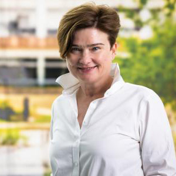

Senior Scientist, Argonne National Lab and University of Chicago, USA
"This is Not a Testbed": How to Build and Operate Experimental Infrastructure
Technology appears to advance at an ever accelerating pace creating new opportunities for the advancement of science: improved sensor technologies now enable precise measurement of a growing range of physical phenomena; single-board computers (SBCs), such as Raspberry Pi and NVIDIA Nanos, allow computing to be deployed in hitherto unviable settings cost-effectively; and networking technologies, improving in both quality and coverage, allow us to connect them all into a powerful observatory instrument, adaptable to investigating a wide range of questions. Like a telescope array that uses computation to stitch together input from multiple single telescopes to obtain the desired picture of the sky, a generalized instrument of this kind can rely on a combination of sensing and computation deployed in the field, to "stitch together" a picture of qualities relating to fields ranging from hydrology to medicine - and then powered by emergent AI capabilities investigate problems ranging from floods and wildfires to social inequalities. The big question is: how do we really put together, customize, and adapt those technological advances so that they not only work in concert but actually support real scientific investigations?
Building experimental systems is both risky and complex: What problems should they solve? Are they the same ones they are capable of solving? If we build it, will they come? At the same time, it is both rewarding and necessary where experimental systems become scientific instruments that can address a new range of problems. In this talk, I will present lessons learned from the development of two NSF-funded, influential, and very distinct experimental systems: the Chameleon project and the FLOTO instrument for distributed broadband research. Chameleon represents over 10 years of experience in constructing, operating, and evolving an instrument for computer science research and education that has to date been used by over 14,000 users, who collectively produced over 1,000 scholarly publications in computer science. It has supported innovative educational ventures, student competitions, and artifact evaluation initiatives, changing community practices on how to share research and education experiences in a digital form. FLOTO has built an edge-to-cloud instrument that deployed an unprecedented 600 SBCs nationwide in the United States to measure broadband, highlight areas of need, and help ensure equitable access to the Internet for all Americans. Both represent experimental systems with distinct objectives and challenges - and both provide lessons learned on how to leverage the exponentially growing opportunities in experimental system design.
Professor Kate Keahey is one of the pioneers of infrastructure cloud computing. She created the Nimbus project, recognized as the first open source Infrastructure-as-a-Service implementation, and continues to work on research aligning cloud computing concepts with the needs of scientific datacenters and applications. To facilitate such research for the community at large, Kate leads the Chameleon project, providing a deeply reconfigurable, large-scale, and open experimental platform for Computer Science research. To foster the recognition of contributions to science made by software projects, Kate co-founded and serves as co-Editor-in-Chief of the SoftwareX journal, a new format designed to publish software contributions. Kate is a Scientist at Argonne National Laboratory and a Senior Scientist at the University of Chicago Consortium for Advanced Science and Engineering (UChicago CASE).